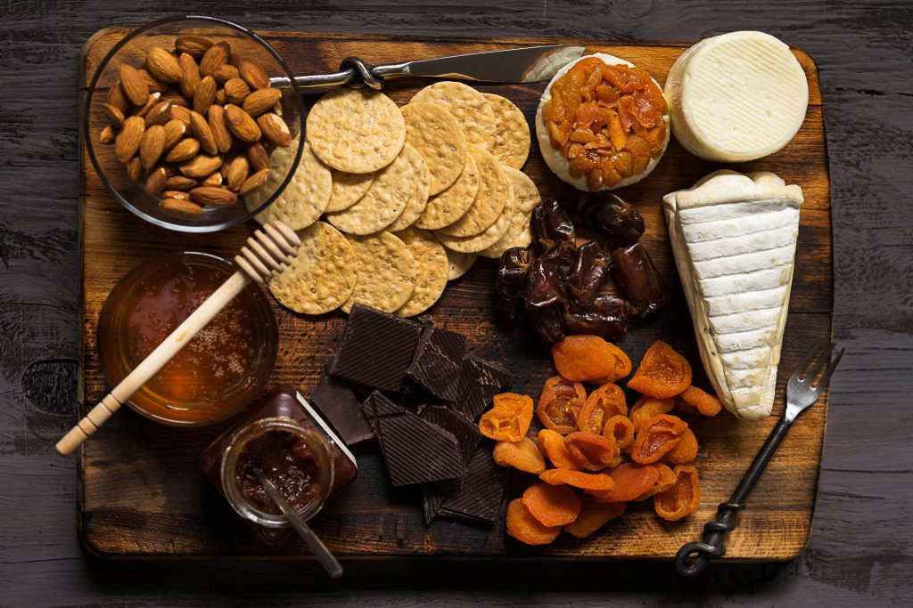

Text Analysis on Amazon Fine Food Reviews

Project Details
- Category: Data Analytics
- Company: Amazon
- Project Duration: Jan 2020 to Apr 2020
- Project URL: https://github.com/kaiixx/Text-Analysis-on-Amazon-Fine-Food-Reviews
Looking specifically at the reviews of Amazon Fine Food, my team performed various text analysis tasks to acquire valuable trends with the aim of translating insights into business value.
Our solution consists of a navigation tool which will display the results retrieved after performing the analytical tasks. These results will be in the form of categories that users can browse through. Each category is supplemented with the top reviews and its sentiment.
Customers are able to make informed choices when deciding on the products to purchase as they are able to retrieve relevant information. This promotes an effective shopping experience for buyers. Addtionally, sellers will be able to make improvements on their product based on the various sentiments.
Clustering Analysis:| Steps | Description |
|---|---|
| Data preprocessing | We first converted all reviews to lowercase, removed stopwords and performed lemmetization. Next, we found the optimal number of clusters using elbow method and converted the reviews' nouns into TF-idf vectors. |
| Performing Kmeans clustering | Next, we converted all reviews into a bag of words and created a TF-idf model for all the review vectors. We then conducted Kmeans clustering to retrieve clusters with similar nouns. |
| Cluster Visualisation | Using NLTK and wordnet, we retrieved the top 10 words from each cluster and generated a word cloud to visualise the significance of each word. |
| Retrieving Top 5 reviews and Document Insertion | We obtained the top 5 most similar reviews compared to the each cluster using cosine similarity. Next, we were also able to obtain the similarity of each noun using their synsets and comparing using the Wu & Palmer metric. This allowed us to compare each new review with every cluster to find the optimal cluster to fit the review into. |
| Steps | Description |
|---|---|
| Data preprocessing | We first performed train-test split on the dataset. Decontraction of phrases and tokenization of sentences was done. Next, using Vader, we pre-labelled our dataset. |
| Training Classifiers | We trained two models, Max Entropy classifier and Naive Bayes classifier. The max entropy classifier was ran for 100 iterations. |
| Testing | For evaluation, we performed both human and machine evaluation. We looked at the accuracy of the models and also used human judgement to identify if the predictions made by the models were similar to a human. |